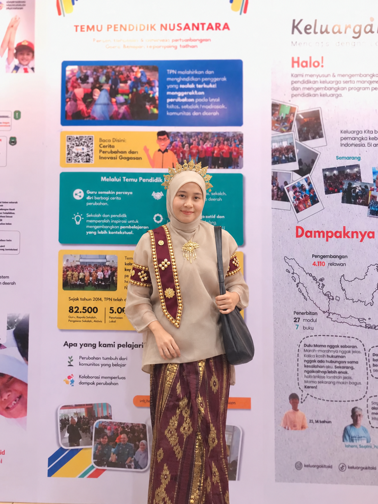
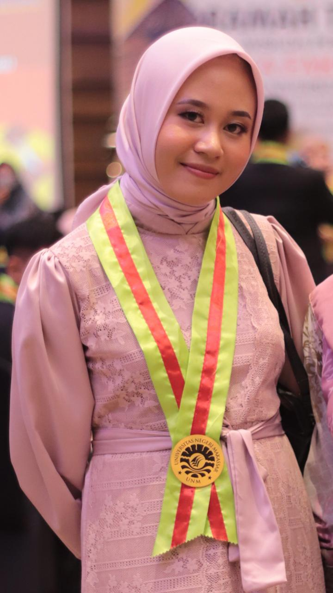
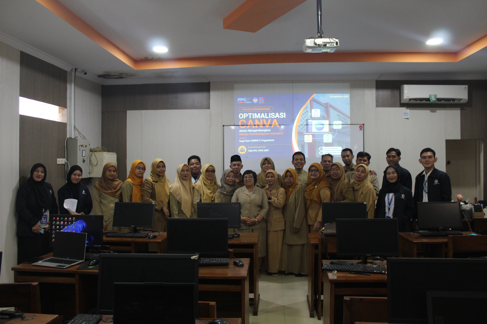
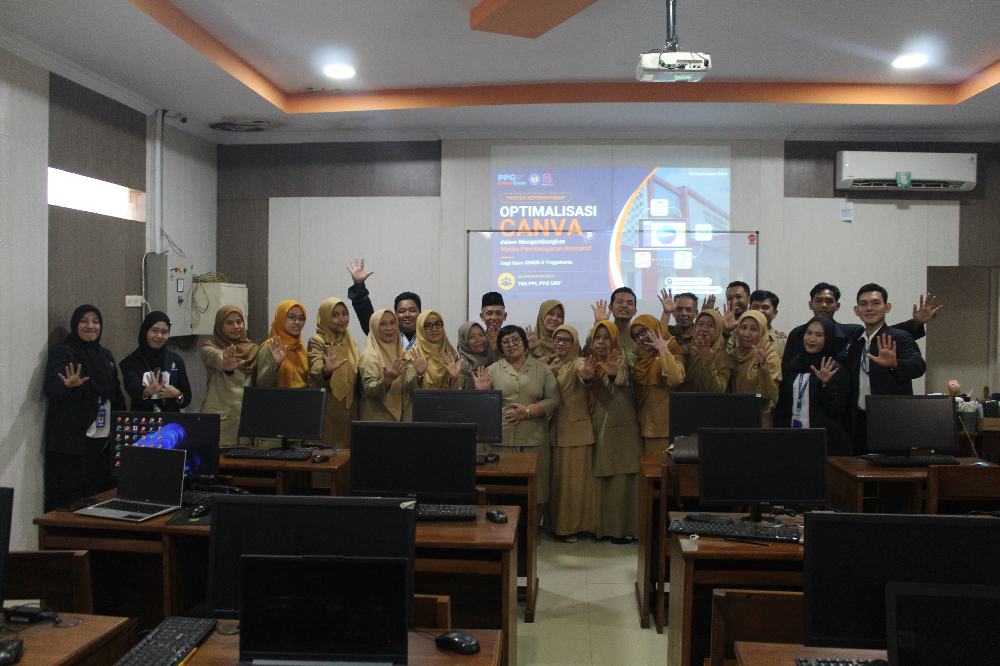
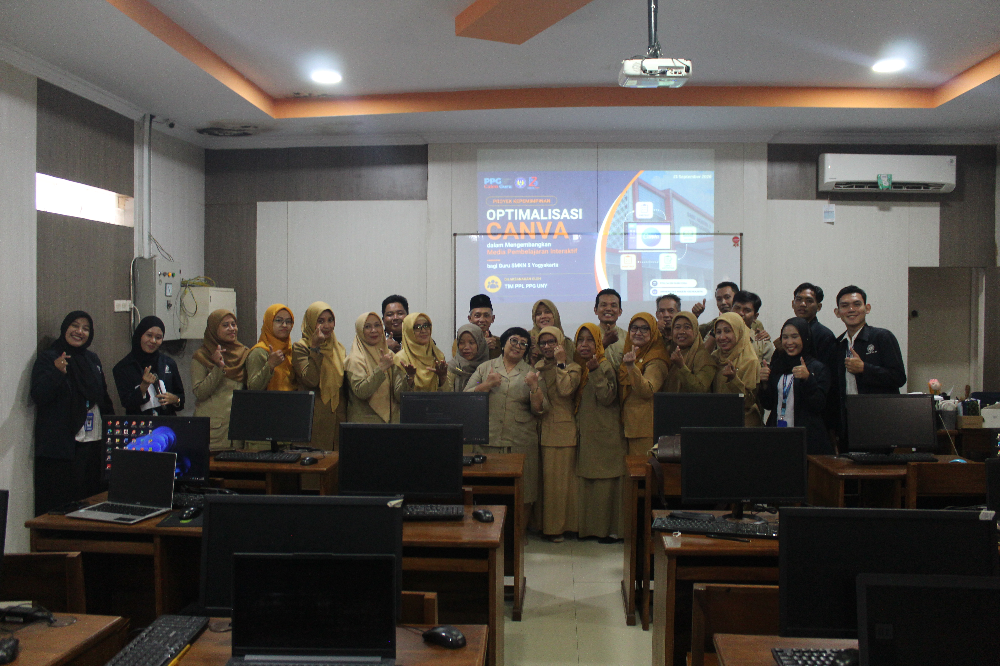
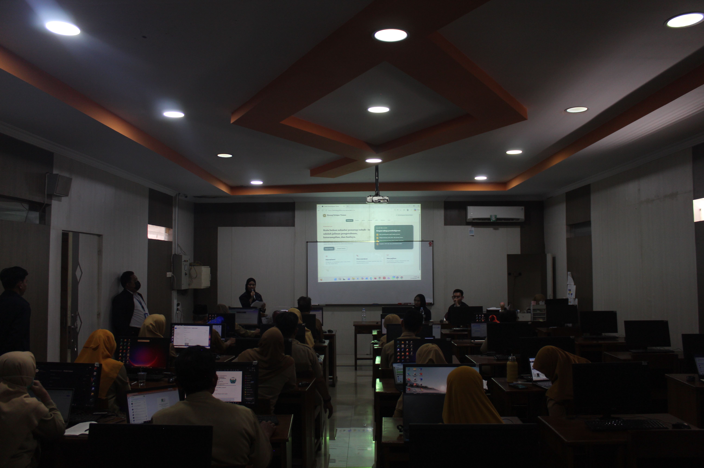
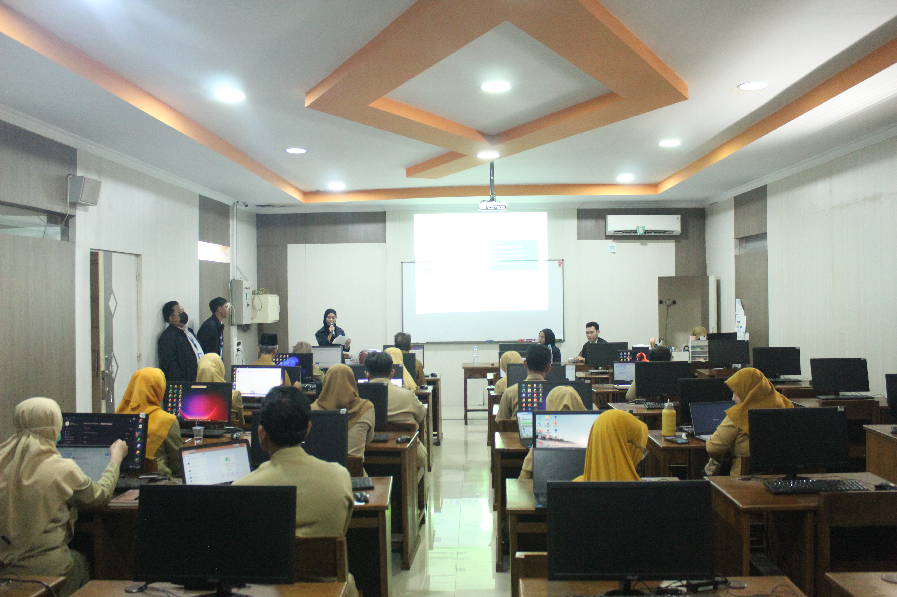
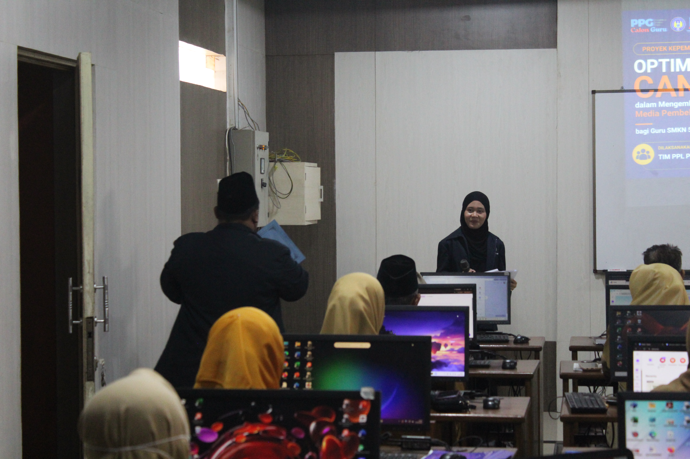
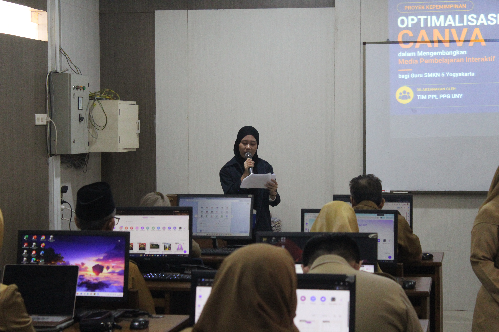

Portofolio Digital Praktik Pembelajaran & Refleksi
Ema Humaera, S.Pd
Dokumentasi komprehensif Praktik Pembelajaran Terbimbing, Praktik Mandiri Siklus 1 hingga Siklus 4, Analisis Perencanaan, Media, LKPD, Rubrik Asesmen, Rekap Nilai & Tugas Murid, serta Video Pembelajaran.

Pengantar
Selamat datang di E-Portfolio saya sebagai mahasiswa Pendidikan Profesi Guru (PPG). Website ini merupakan ruang dokumentasi sekaligus refleksi perjalanan saya dalam mengembangkan kompetensi sebagai calon guru profesional.
Melalui e-portfolio ini, saya menyajikan berbagai pengalaman belajar, perangkat pembelajaran, serta praktik mengajar yang telah saya lakukan selama mengikuti Program PPL Mandiri. Setiap proses yang ditampilkan bukan hanya sebagai bukti kegiatan, tetapi juga sebagai sarana refleksi untuk terus memperbaiki kualitas pembelajaran yang saya rancang dan laksanakan.
Harapannya, e-portfolio ini dapat memberikan gambaran nyata tentang kesiapan saya dalam menjadi pendidik yang tidak hanya kompeten, tetapi juga inspiratif dan adaptif terhadap perkembangan zaman.
Menu Utama Portofolio Penilaian
Kemudahan navigasi langsung bagi Dosen Pembimbing & Guru Pamong
Profil
Biodata, latar belakang akademis, riwayat LPTK, dan filosofi mengajar.
Lihat ProfilPraktik Pembelajaran
Analisis RPP, Media, LKPD, Asesmen, dan Video setiap siklus praktik.
Buka Praktik PembelajaranKegiatan Non-Mengajar
Tugas piket, pendampingan ekstrakurikuler, dan kegiatan sekolah.
Lihat Non-MengajarRefleksi Diri
Rangkuman maknawi, temuan evaluasi, dan Rencana Tindak Lanjut (RTL).
Baca Refleksi DiriProfil Pendidik
Informasi akademis, kompetensi pedagogis, dan nilai-nilai dasar pendidik profesional.
Tentang Saya
Perkenalkan, saya Ema Humaera, biasa dipanggil Ema. Saya lahir di Bulukumba pada 2 Agustus 2000 dan merupakan anak pertama dari dua bersaudara. Saya merupakan alumni Program Studi Pendidikan Teknik Informatika dan Komputer, Universitas Negeri Makassar. Saat ini, saya sedang melanjutkan Pendidikan Profesi Guru (PPG) di Universitas Negeri Yogyakarta pada Program Studi Informatika.
Saya memiliki minat yang tinggi dalam bidang pendidikan, khususnya dalam merancang dan melaksanakan pembelajaran yang interaktif, bermakna, serta relevan dengan kebutuhan murid. Bagi saya, pendidikan tidak hanya berfokus pada transfer pengetahuan, tetapi juga menjadi proses penting dalam membentuk karakter dan mengembangkan potensi murid secara optimal dan berkelanjutan. Di luar kegiatan akademik, saya memiliki hobi traveling, memasak, dan membaca, yang turut memperkaya wawasan serta pengalaman saya dalam kehidupan sehari-hari.

👤 Biodata Diri
🎓 Riwayat Pendidikan
Universitas Negeri Yogyakarta
PPG Calon Guru (Informatika 2026)
Universitas Negeri Makassar
Pendidikan Teknik Informatika dan Komputer S1 (2018-2022)
SMA Negeri 7 Bulukumba
IPA (2015-2018)
"Seorang guru sejati tidak hanya mengajar, tetapi terus belajar dan beradaptasi. Ia tidak sekadar membentuk pengetahuan, melainkan juga menumbuhkan karakter, menyalakan semangat, dan mengukir masa depan."
"Setiap murid hadir dengan potensi yang berbeda, pembelajaran menjadi ruang untuk menemukan, menumbuhkan, dan menguatkan makna dari setiap prosesnya."
Inspirasi Menjadi Guru
Keterterikan saya pada dunia pendidikan berakar dari sosok guru di bangku Sekolah Dasar yang menjadi teladan hidup bagi saya. Beliau mengajar dengan kesabaran yang luar biasa, mampu merangkul setiap keunikan murid, serta memperlakukan kami tanpa membeda-bedakan latar belakang maupun kemampuan. Kehangatan yang beliau hadirkan menciptakan rasa aman dalam belajar, sehingga setiap murid merasa dihargai dan memiliki ruang untuk berkembang secara optimal. Pengalaman tersebut membentuk pemahaman saya bahwa kualitas pembelajaran tidak hanya ditentukan oleh materi yang disampaikan, tetapi juga oleh sikap, pendekatan, dan nilai yang dibawa oleh seorang guru.
Tujuan Menjadi Guru
Berangkat dari pengalaman tersebut, saya memiliki tujuan untuk menjadi guru profesional yang tidak hanya kompeten secara akademik, tetapi juga mampu menciptakan lingkungan belajar yang inklusif, adil, dan berpusat pada murid. Saya ingin menghadirkan pembelajaran yang tidak hanya mendorong pemahaman konsep, tetapi juga membangun kepercayaan diri, kemandirian, serta karakter positif dalam diri murid. Melalui Program Pendidikan Profesi Guru (PPG), saya berkomitmen untuk terus mengembangkan kompetensi, memperkuat kemampuan pedagogik, serta menerapkan praktik pembelajaran yang reflektif dan adaptif sesuai kebutuhan murid.
📚 Hal yang Saya Pelajari Selama PPL Mandiri
Selama mengikuti PPL Mandiri, saya belajar bahwa menjadi guru bukan hanya menyampaikan materi, tetapi juga memahami kondisi, karakter, dan kebutuhan murid di kelas. Saya belajar bagaimana menyusun perangkat pembelajaran yang tidak hanya sesuai teori, tetapi juga bisa diterapkan dalam kondisi nyata di sekolah. Dari setiap siklus pembelajaran, saya memahami bahwa rancangan pembelajaran harus fleksibel karena situasi di lapangan sering kali berbeda dengan yang direncanakan.
Saya juga belajar pentingnya menciptakan pembelajaran yang bermakna dan dekat dengan kehidupan murid. Ketika materi dikaitkan dengan dunia kerja dan kebutuhan nyata mereka, murid menjadi lebih aktif dan antusias. Selain itu, saya belajar bagaimana mengelola kelas yang pasif melalui diskusi kelompok, pertanyaan pematik, penyebutan nomor absen, serta kegiatan presentasi agar murid lebih berani menyampaikan pendapat.
Selama PPL, saya juga semakin memahami pentingnya refleksi dan umpan balik dalam proses belajar mengajar. Dari masukan guru pamong dan dosen pembimbing lapangan, saya belajar memperbaiki cara menjelaskan materi, mengatur waktu pembelajaran, menyusun asesmen, dan memberikan pendampingan kepada murid dengan lebih baik.
Artefak & Analisis Praktik Pembelajaran
Pilih tab siklus di bawah untuk melihat analisis lengkap serta mengunduh dokumen pendukung pembelajaran.
Analisis Produk Rancangan / Perencanaan Pembelajaran
Perencanaan disusun menggunakan model Problem Based Learning (PBL) yang dipadukan dengan metode Group Investigation (GI). Perangkat pembelajaran dirancang terintegrasi dengan pendekatan Deep Learning (prinsip Meaningful, Mindful, Joyful), prinsip Teaching at the Right Level (TaRL) untuk memetakan kebutuhan belajar, Culturally Responsive Teaching (CRT) dengan mengaitkan materi pada aktivitas sehari-hari, serta Pembelajaran Sosial Emosional (PSE).
Analisis Materi Pembelajaran
Materi disusun secara sistematis mulai dari pengertian algoritma, ciri-ciri algoritma yang baik (memiliki input/output, definiteness, finiteness, effectiveness), hingga tiga bentuk representasi algoritma (narasi, pseudocode, dan flowchart). Materi disajikan dengan analogi konkret seperti resep memasak, langkah mengirim tugas di Google Classroom, hingga meminjam buku di perpustakaan.
Analisis Media Pembelajaran
Media pembelajaran memanfaatkan platform Canva untuk penyajian materi, kuis interaktif untuk asesmen diagnostik/formatif, serta sistem games investigasi berbasis digital yang menarik dan interaktif bagi peserta didik. Tautan LKPD Games pembelajaran: LKPD Siklus 1 (Petualangan).
Analisis Video Pelaksanaan Praktik Mengajar
Pelaksanaan pembelajaran berjalan sangat interaktif. Peserta didik menunjukkan antusiasme tinggi saat menjelajahi pos-pos digital dalam model Group Investigation. Kolaborasi antaranggota kelompok tampak efektif dalam menyelesaikan tantangan berjenjang dari C1 hingga C4.
Analisis Kegiatan Non-Mengajar
Meliputi keterlibatan aktif dalam piket 5S (Senyum, Sapa, Salam, Sopan, Santun) di gerbang sekolah untuk pembentukan karakter peserta didik, serta pendampingan ekstrakurikuler/kegiatan sekolah sesuai penugasan di satuan pendidikan.
Instrumen Penilaian Beserta Analisisnya
Menggunakan asesmen diagnostik (kognitif dan non-kognitif serta check-in emosi), asesmen formatif (observasi afektif berdasarkan profil lulusan, tanya jawab lisan, dan unjuk kerja kelompok/LKPD Group Investigation), serta asesmen sumatif berupa tes tertulis pilihan ganda. Berdasarkan rekapitulasi nilai, sebagian besar peserta didik telah mencapai Kriteria Ketercapaian Tujuan Pembelajaran (KKTP), dengan kelompok yang memerlukan bimbingan mendapatkan intervensi berupa tutor sebaya.
Dokumen Pendukung
Berkas utama untuk verifikasi penilaian praktik terbimbing
Dokumentasi & Video Pembelajaran
Kolase foto kegiatan praktik terbimbing dan rekaman video

.jpeg)

.jpeg)

.jpeg)

.jpeg)


.jpeg)
.jpeg)
.jpeg)
.jpeg)

Kegiatan Non-Mengajar
Dokumentasi keterlibatan aktif dalam kultur persekolahan, piket harian, dan pembinaan kesiswaan secara keseluruhan.
Piket 5S (Senyum, Sapa, Salam, Sopan, Santun)
Menyambut peserta didik di gerbang sekolah setiap pagi, memeriksa kerapian seragam, ketertiban helm, dan atribut sekolah secara persuasif. Kegiatan ini menciptakan suasana yang positif dan hangat sejak awal hari.


Pendampingan Praktik Membuat Batik
Mendampingi murid kelas XI Tekstil B saat melaksanakan praktik membuat batik di laboratorium, memastikan kegiatan berjalan tertib, terarah, dan memperhatikan keselamatan kerja serta kerapian area praktik.

.jpeg)

Pendampingan Projek Keramik Kelas XII
Bersama tim membantu guru projek mendampingi dan memantau murid kelas XII Keramik selama proses pembuatan projek. Kehadiran tim membuat pendampingan terasa lebih ringan dan seluruh murid dapat terjangkau.

.jpeg)
Pendampingan Ekstrakurikuler Musik
Mendampingi murid ekstrakurikuler musik berlatih setelah jam KBM selesai. Memantau jalannya latihan serta memberikan masukan dan saran yang membangun agar murid tetap leluasa berkreasi.


Artefak Dokumentasi
Dokumentasi ini merupakan kegiatan selama menempuh PPL Mandiri di SMK Negeri 5 Yogyakarta.

.jpeg)


.jpeg)

.jpeg)


.jpeg)
.jpeg)

.jpeg)
.jpeg)
.jpeg)


.jpeg)

.jpeg)

.jpeg)

.jpeg)


.jpeg)
.jpeg)


.jpeg)


.jpeg)









Refleksi Diri & Penutup
Makna perjalanan PPL PPG Calon Guru serta Rencana Tindak Lanjut (RTL) keberlanjutan.
"Menjadi guru profesional bukanlah titik akhir, melainkan sebuah komitmen pembelajaran sepanjang hayat. Setiap evaluasi di dalam kelas adalah pijakan untuk menghadirkan pembelajaran yang semakin bermakna bagi peserta didik."
Sintesis Perjalanan PPL Mandiri (Siklus 1-4)
Rangkaian Praktik Pembelajaran Mandiri dari Siklus 1 hingga Siklus 4 memberikan transformasi mendalam pada diri saya. Di Siklus 1 (Algoritma Pencarian), saya belajar pentingnya pengelolaan energi dan waktu sebagai guru, terutama saat mengajar di jam-jam akhir. Saya menyadari bahwa kelelahan berdampak pada kemampuan saya menjangkau murid yang membutuhkan pendampingan intensif.
Memasuki Siklus 2 (Struktur Data), saya mulai menerapkan strategi Tutor Sebaya dan Diferensiasi (TaRL) secara lebih terstruktur. Pembelajaran yang variatif (visual, auditori, kinestetik) berhasil menjaga antusiasme murid, meski tantangan posttest yang terburu-buru masih menjadi evaluasi. Di Siklus 3 (Sistem Komputer), fokus perbaikan beralih pada kesiapan teknis. Kendala link LKPD mengajarkan saya untuk selalu menyiapkan "Plan B" dan menguji media sebelum kelas dimulai.
Puncaknya di Siklus 4, saya berhasil mengintegrasikan seluruh pembelajaran tersebut. Saya lebih peka terhadap murid yang pasif dengan memberikan pertanyaan berjenjang dan pancingan yang tepat. Saya belajar bahwa menjadi guru bukan hanya soal menyampaikan materi, tetapi seni mengelola kelas, berempati pada kesulitan murid, dan terus beradaptasi secara reflektif.
✅ Pencapaian & Kekuatan
- Mampu merancang Modul Ajar berbasis PBL dan TaRL.
- Berhasil menciptakan pembelajaran variatif yang menyenangkan.
- Mampu mengelola kelas secara lebih tenang dan terstruktur.
🚀 Rencana Tindak Lanjut (RTL)
- Menetapkan pasangan tutor sebaya yang terstruktur sejak awal.
- Selalu menyiapkan plan B untuk kesiapan teknis media digital.
- Menerapkan pertanyaan berjenjang untuk memancing siswa pasif.